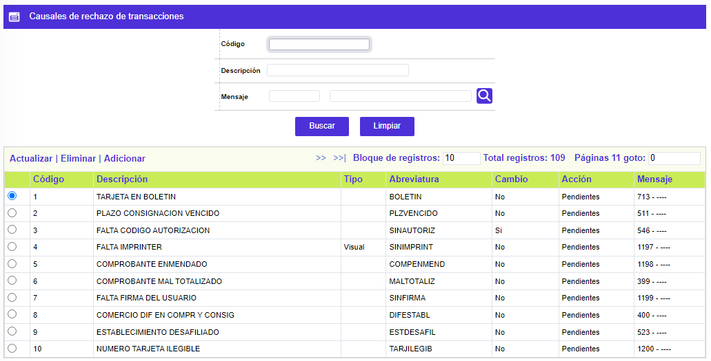
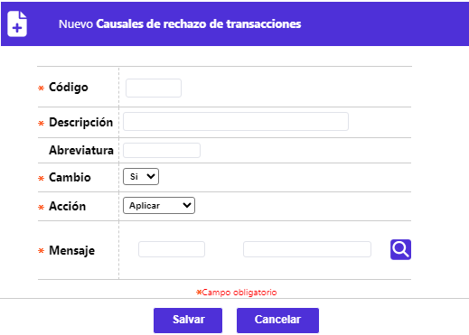
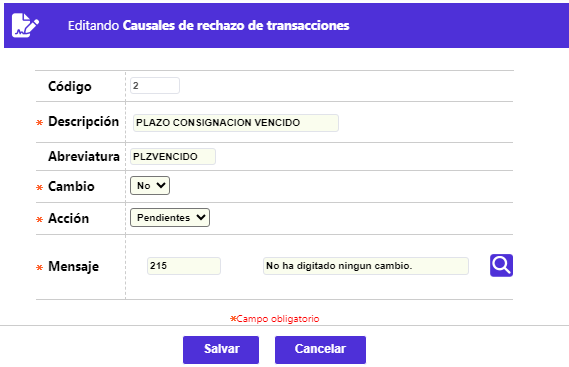

Causales de rechazo de transacciones
Mediante esta función se habilita la consulta y mantenimiento (reservado a los funcionarios de OpenCard SAS) de la tabla en la cual se almacenan los códigos y descripciones de los diferentes motivos por los cuales pueden ser rechazadas las transacciones, dadas las múltiples validaciones que realiza el sistema durante el procesamiento de las mismas. El formulario cuenta con una opción de Filtro de Búsqueda por Código y Descripción.

El formulario contiene los enlaces: Actualizar, Eliminar y Adicionar.
Adicionar: Al activar ese enlace se despliega un formulario

Descripción de campos
Código |
Campo numérico obligatorio de 4 dígitos asociado a una única causal de rechazo. |
Descripción |
Campo alfanumérico de 30 posiciones obligatorio en el cual se registra el nombre o descripción de cada causal de rechazo codificada. |
Tipo |
Este campo contien un combo en el cual se selecciona la manera como se aplica la causal de rechazo así: Nulo, Interna, que son las causales que internamente se hayan en la programación y siempre se validan en el movimiento, Forzada son aquellas que la entidad determina que aunque se presenten en el movimiento éste sea aplicado y Visual que son las causales que se utilizan en el momento de la captura de movimiento de oficinas en el cual el usuario percibe algún motivo por el cual no debe aplicarse el movimiento. |
Abreviatura |
Campo alfanumérico de 10 posiciones, no obligatorio, en el cual se registra el mnemónico o nombre condensado de cada causal de rechazo codificada, el que se utiliza en consultas o reportes impresos. |
Cambio |
Campo obligatorio, en el cual se debe seleccionar de la lista de valores entre Si o No la causal relacionada permite realizar cambios o modificaciones en el campo Acción de la opción Causales de rechazo en el cual se define el destino de la transacción rechazada y poder así direccionarla. |
Acción |
Campo obligatorio, en el cual se debe optar por una de las alternativas ofrecidas, Fraudes, Pendiente o Aplicar, lo que determina el curso a seguir por la transacción rechazada. |
Mensaje |
Este campo obligatorio contiene una lista de valores de la cual se debe seleccionar el código o número del Mensaje que mejor describa la razón por la cual se rechaza la transacción. |
Actualizar: Al activar ese enlace se despliega un formulario en el cual los campos modificables son Descripción, Tipo, Abreviatura, Cambio, Acción y Mensaje
